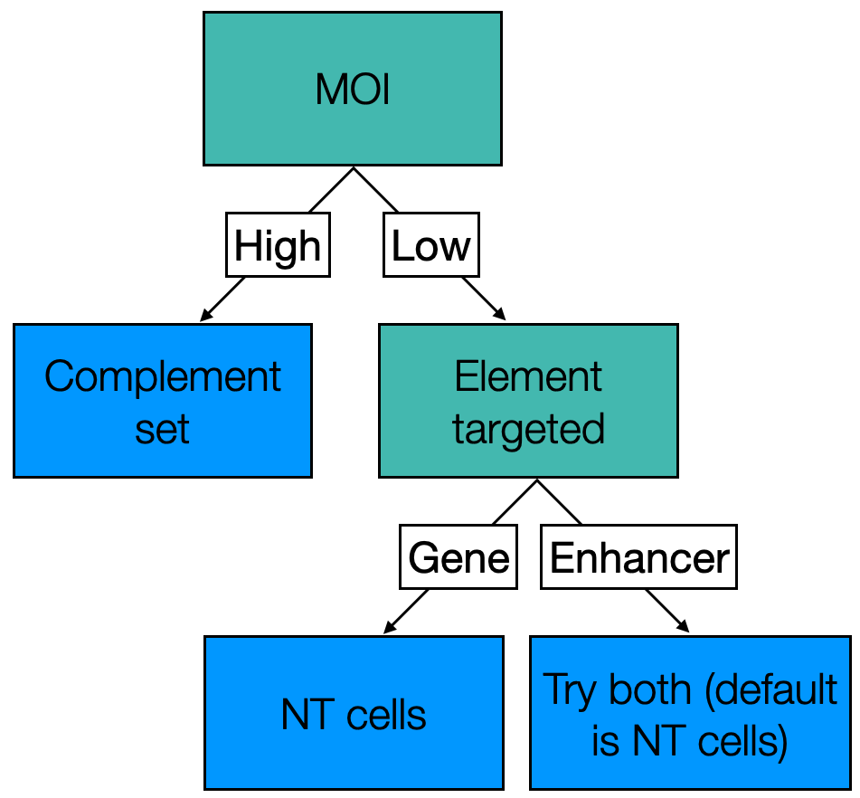
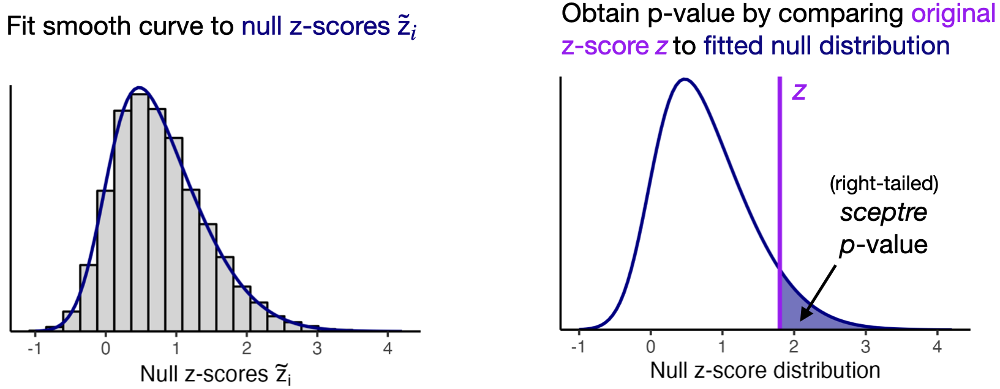

2 Set analysis parameters
This chapter explicates the “set analysis parameters” step of the sceptre pipeline. The purpose of this step is to select the parameters that govern how the statistical analysis is to be carried out.
We begin by loading the sceptre and sceptredata packages.
Throughout, we examine two example datasets. First, we examine the example high-MOI CRISPRi screen of candidate enhancers in K562 cells. This is the example dataset that we used in The whole game and in Chapter 1. We initialize a sceptre_object called sceptre_object_highmoi to represent these data.
data(highmoi_example_data)
data(grna_target_data_frame_highmoi)
sceptre_object_highmoi <- import_data(
response_matrix = highmoi_example_data$response_matrix,
grna_matrix = highmoi_example_data$grna_matrix,
grna_target_data_frame = grna_target_data_frame_highmoi,
moi = "high",
extra_covariates = highmoi_example_data$extra_covariates,
response_names = highmoi_example_data$gene_names
)We additionally examine an example low-MOI CRISPRko screen of gene transcription start sites in immune cells (Papalexi et al. 2021). We initialize a sceptre_object called sceptre_object_lowmoi to store this latter dataset.
data(lowmoi_example_data)
sceptre_object_lowmoi <- import_data(
response_matrix = lowmoi_example_data$response_matrix,
grna_matrix = lowmoi_example_data$grna_matrix,
extra_covariates = lowmoi_example_data$extra_covariates,
grna_target_data_frame = lowmoi_example_data$grna_target_data_frame,
moi = "low"
)We print the details of the CRISPRko dataset below.
sceptre_object_lowmoiAn object of class sceptre_object.
Attributes of the data:
• 20729 cells
• 299 responses
• Low multiplicity-of-infection
• 101 targeting gRNAs (distributed across 26 targets)
• 9 non-targeting gRNAs
• 6 covariates (bio_rep, grna_n_nonzero, grna_n_umis, response_n_nonzero, response_n_umis, response_p_mito)The CRISPR perturbations target gene transcription start sites. Each gene is targeted by three or four gRNAs, and nine gRNAs in the dataset are non-targeting. The “responses” are genes. We print a few rows of the gRNA target data frame corresponding to this dataset below.
lowmoi_example_data$grna_target_data_frame[1:8,] grna_id grna_target
1 ATF2g1 ATF2
2 ATF2g2 ATF2
3 ATF2g3 ATF2
4 ATF2g4 ATF2
5 BRD4g1 BRD4
6 BRD4g2 BRD4
7 BRD4g3 BRD4
8 BRD4g4 BRD4Our goal in analyzing the CRISPRko dataset is to dissect gene regulatory networks by linking perturbations of genes to changes in the expression of other genes.
We set the analysis parameters by calling the function set_analysis_parameters() on the sceptre_object. This function takes several arguments:
positive_control_pairsdiscovery_pairssidegrna_integration_strategycontrol_groupresampling_mechanismformula_objectmultiple_testing_methodmultiple_testing_alpharesampling_approximation
None of these arguments is required, and all are set to sensible defaults. However, users will specify discovery_pairs and positive_control_pairs in most analyses. We describe these arguments below.
2.1 Positive control pairs
Positive control pairs are target-response pairs for which we know (or have strong reason to believe) that there is a regulatory relationship between the target and the response. We can use positive control pairs to verify that sceptre (or any association testing method for that matter) is sensitive (i.e., capable of detecting true associations) on the dataset under analysis. We use the function construct_positive_control_pairs() to construct the positive control pairs. construct_positive_control_pairs() takes as an argument a sceptre_object and returns a data frame with columns grna_target and response_id, where gRNA targets and response IDs with matching names are paired. We call construct_positive_control_pairs() on the high-MOI CRISPRi dataset and the low-MOI CRISPRko dataset. In both cases the positive control set consists of transcription start sites paired to the gene regulated by those transcription start sites.
positive_control_pairs_highmoi <- construct_positive_control_pairs(
sceptre_object = sceptre_object_highmoi
)
head(positive_control_pairs_highmoi) # high MOI CRISPRi dataset grna_target response_id
1 ENSG00000069482 ENSG00000069482
2 ENSG00000100316 ENSG00000100316
3 ENSG00000104131 ENSG00000104131
4 ENSG00000122026 ENSG00000122026
5 ENSG00000135821 ENSG00000135821
6 ENSG00000147669 ENSG00000147669positive_control_pairs_lowmoi <- construct_positive_control_pairs(
sceptre_object = sceptre_object_lowmoi
)
head(positive_control_pairs_lowmoi) # low MOI CRISPRko dataset grna_target response_id
1 CMTM6 CMTM6
2 IFNGR2 IFNGR2
3 JAK2 JAK2
4 NFKBIA NFKBIA
5 STAT1 STAT1
6 STAT2 STAT2Positive control pairs need not consist exclusively of gene transcription start sites paired to target genes. For example, enhancer-gene links that have been validated previously (through, e.g., an arrayed CRISPR screen with bulk RNA-seq, or a bulk CRISPR screen with cell sorting) also can serve as positive control pairs. Users manually can append additional positive control pairs to the positive control pair data frame via a call to rbind(). For example, suppose we know on the high-MOI CRISPRi data that candidate_enh_1 regulates gene ENSG00000069482 and that candidate_enh_10 regulates gene ENSG00000135821. We can add these enhancer-gene links to the positive control pair data frame as follows.
# construct data frame of additional positive control pairs
additional_positive_control_pairs <-
data.frame(grna_target = c("candidate_enh_1", "candidate_enh_10"),
response_id = c("ENSG00000069482", "ENSG00000135821"))
# append additional pairs to positive control data frame
positive_control_pairs_highmoi_updated <- rbind(
positive_control_pairs_highmoi,
additional_positive_control_pairs
)
positive_control_pairs_highmoi_updated grna_target response_id
1 ENSG00000069482 ENSG00000069482
2 ENSG00000100316 ENSG00000100316
3 ENSG00000104131 ENSG00000104131
4 ENSG00000122026 ENSG00000122026
5 ENSG00000135821 ENSG00000135821
6 ENSG00000147669 ENSG00000147669
7 ENSG00000155380 ENSG00000155380
8 ENSG00000176890 ENSG00000176890
9 ENSG00000187840 ENSG00000187840
10 ENSG00000196683 ENSG00000196683
11 candidate_enh_1 ENSG00000069482
12 candidate_enh_10 ENSG00000135821We then could supply positive_control_pairs_highmoi_updated instead of positive_control_pairs_highmoi to set_analysis_parameters().
2.2 Discovery pairs
Discovery pairs are target-response pairs whose association status we do not know but seek to learn. Unlike positive control and negative control pairs, which serve a mainly technical purpose, discovery pairs are of primary scientific interest. sceptre provides two helper functions for constructing discovery pairs: construct_cis_pairs() and construct_trans_pairs().
2.2.1 Construct cis pairs
construct_cis_pairs() returns the set of target-response pairs for which the target and response are located on the same chromosome and in close physical proximity to one another. construct_cis_pairs() is a useful pair constructor function for screens that aim to map noncoding regulatory elements (e.g., enhancers or noncoding GWAS variants) to target genes or proteins in cis. construct_cis_pairs() assumes that the columns chr, start, and stop are present in the grna_target_data_frame, giving the chromosome, start position, and end position of the region that each gRNA targets. construct_cis_pairs() takes several arguments: sceptre_object (required) distance_threshold (optional), positive_control_pairs (optional), and response_position_data_frame (optional). By default, construct_cis_pairs() pairs each gRNA target to the set of responses on the same chromosome as that target and within distance_threshold bases of that target. (The default value of distance_threshold is 500,000 bases, or half a megabase.) The positive_control_pairs data frame optionally can be passed to construct_cis_pairs(), in which case the positive control targets (i.e., the entries within the grna_target column of positive_control_pairs) are excluded from the cis pairs. One may want to exclude these from the discovery analysis if these targets are intended for positive control purposes only.
Finally, response_position_data_frame is an optional data frame containing the columns response_id, chr, and position, where chr and position give the genomic coordinate of each response_id. The default value of response_position_data_frame is gene_position_data_frame_grch38, which is a data frame that ships with sceptre that contains the genomic coordinate of the TSS of all genes in the human genome with respect to reference genome GRCh38. We print several rows of gene_position_data_frame_grch38 below.
gene_position_data_frame_grch38[c(1:4, 8001:8004),] response_id chr position
<char> <fctr> <int>
1: ENSG00000243485 chr1 29554
2: ENSG00000237613 chr1 36081
3: ENSG00000186092 chr1 65419
4: ENSG00000239945 chr1 91105
5: ENSG00000127328 chr12 69738681
6: ENSG00000166268 chr12 69825227
7: ENSG00000257241 chr12 69947081
8: ENSG00000257139 chr12 70180338gene_position_data_frame_grch38 was derived from the GrCh38 reference genome, which is the reference genome that all versions of cellranger count released since 2021 have used for alignment. sceptre also contains gene_position_data_frame_grch37, which is a data frame that stores the genomic coordinate of each gene’s TSS with respect to reference genome GRCh37.
Note
Users should select between gene_position_data_frame_grch38 and gene_position_data_frame_grch37 on the basis of reference genome that the chromosomal coordinates are defined with respect to.
Users also can pass their own response_position_data_frame to construct_cis_pairs() if gene_position_data_frame_grch38 and gene_position_data_frame_grch37 are inadequate for their analysis. For example, some users may wish to map enhancers to proteins in cis. Such users could construct the discovery set by coupling each enhancer to the set of proteins whose corresponding gene is in close physical proximity to that enhancer. In such an analysis response_position_data_frame would be a data frame mapping each protein to the chromosomal position of the transcription start site of its corresponding gene. Note that response_position_data_frame and the chr, start, and stop columns of the grna_target_data_frame should be defined with respect to the same reference genome, as construct_cis_pairs() implements its functionality by intersecting response_position_data_frame with grna_target_data_frame.
We use construct_cis_pairs() to construct the discovery pairs for the high-MOI CRISPRi dataset. We set distance_threshold to 5e6 (i.e., 5 megabases) so as to increase the number of pairs in the discovery set for illustration purposes.
discovery_pairs_highmoi <- construct_cis_pairs(
sceptre_object = sceptre_object_highmoi,
positive_control_pairs = positive_control_pairs_highmoi,
distance_threshold = 5e6
)discovery_pairs_highmoi is a data frame with columns grna_target and response_id; each candidate enhancer is mapped to the set of genes in close proximity to that candidate enhancer.
discovery_pairs_highmoi[c(1, 10, 20, 30, 40, 50),] grna_target response_id
1 candidate_enh_1 ENSG00000174529
10 candidate_enh_1 ENSG00000117280
20 candidate_enh_2 ENSG00000143493
30 candidate_enh_2 ENSG00000136643
40 candidate_enh_3 ENSG00000142733
50 candidate_enh_3 ENSG000001177482.2.2 Construct trans pairs
construct_trans_pairs() returns the entire set of possible target-response pairs. construct_trans_pairs() is a useful pair constructor function for analyses in which we seek to conduct a trans analysis, testing each target against each response. construct_trans_pairs() takes as arguments sceptre_object (required), positive_control_pairs (optional), and pairs_to_exclude (optional). By default construct_trans_pairs() returns a data frame with columns grna_target and response_id, where each gRNA target is mapped to each response ID.
The optional argument pairs_to_exclude enables the user to remove specific pairs from the trans set and takes values "none", "pc_pairs", or "pairs_containing_pc_targets". If pairs_to_exclude is set to "none" (the default), then no pairs are removed from the trans set. Next, if pairs_to_exclude is set to "pc_pairs" (and the positive_control_pairs data frame is passed), then then the positive control target-response pairs are excluded from the trans set. Finally, if pairs_to_exclude is set to "pairs_containing_pc_targets" (and positive_control_pairs is passed), then all pairs containing a positive control gRNA target are excluded from the trans pairs. (In this sense setting pairs_to_exclude to "pairs_containing_pc_targets" is stronger than setting pairs_to_exclude to "pc_pairs".) Typically, in gene-targeting (resp., noncoding-regulatory-element-targeting) screens, we set pairs_to_exclude to "pc_pairs" (resp., "pairs_containing_pc_targets"). Below, we call construct_trans_pairs() to construct the discovery set for the low-MOI CRISPRko data.
discovery_pairs_lowmoi <- construct_trans_pairs(
sceptre_object = sceptre_object_lowmoi,
positive_control_pairs = positive_control_pairs_lowmoi,
pairs_to_exclude = "pc_pairs"
)
head(discovery_pairs_lowmoi) grna_target response_id
<char> <char>
1: ATF2 PCBP3
2: BRD4 PCBP3
3: CAV1 PCBP3
4: CD274 PCBP3
5: CD86 PCBP3
6: CMTM6 PCBP3We also can use construct_trans_pairs() to construct a trans discovery set for the high-MOI, enhancer-targeting CRISPRi dataset. To this end we call construct_trans_pairs(), setting pairs_to_exclude to "pairs_containing_pc_targets" so as to exclude all positive control gRNA targets from the trans pairs.
discovery_pairs_highmoi_trans <- construct_trans_pairs(
sceptre_object = sceptre_object_highmoi,
positive_control_pairs = positive_control_pairs_highmoi,
pairs_to_exclude = "pairs_containing_pc_targets"
)The resulting data frame, discovery_pairs_highmoi_trans, maps each candidate enhancer to the entire set of genes.
head(discovery_pairs_highmoi_trans) grna_target response_id
<char> <char>
1: candidate_enh_1 ENSG00000069275
2: candidate_enh_10 ENSG00000069275
3: candidate_enh_11 ENSG00000069275
4: candidate_enh_12 ENSG00000069275
5: candidate_enh_13 ENSG00000069275
6: candidate_enh_14 ENSG00000069275Some users may wish to run both cis and trans analyses on their data. We recommend that such users carry out the sceptre pipeline twice: once using a cis discovery set and once using a trans discovery set. See Section D.7 for more details.
The discovery pairs data frame is optional and need not be specified. Users may want to refrain from passing a discovery pairs data frame when runing a control analysis, i.e. an analysis of the negative control pairs and/or positive control pairs exclusively.
2.2.3 Reducing the multiplicity burden
sceptre computes a p-value for each target-response pair in the discovery set. These p-values are subjected to a multiple testing correction procedure (by default, the Benjamini-Hochberg method) to produce a discovery set that controls some notion of aggregate type-I error (by default, the false discovery rate). See Section 2.9 for more details on multiple testing. The more pairs that are tested, the more stringest this multiplicity correction is. Therefore, including a large number of uninteresting or “null” pairs (i.e., pairs for which there is no relationship between the target and response) in the discovery set causes the power of the multiple testing correction procedure to decrease, resulting in fewer discoveries. If possible, it is good to restrict one’s attention to pairs that are promising or scientifically interesting a priori.
2.3 Side
sceptre can run left-tailed, right-tailed, and two-tailed tests of association. Left-tailed tests assess a decrease in expression, right-tailed tests assess an increase in expression, and two-tailed tests assess an increase or decrease in expression. The parameter side controls the sidedness of the test and can take values "left", "right", or "both". ("both" indicates a two-tailed test.) Two-tailed tests typically are the best choice for trans analyses, as the direction of trans relationships generally is uncertain. For cis analyses, on the other hand, the sidedness of the test should be chosen on the basis of the type of genomic element targeted and the CRISPR perturbation modality. The following table summarizes whether a left- or right-tailed test is appropriate for a cis analysis as a function of these variables.
| Target element | CRISPR modality | Testing for | Sidedness |
|---|---|---|---|
| Enhancer | CRISPRi or CRISPRko | Decrease in expression | Left |
| Enhancer | CRISPRa | Increase in expression | Right |
| Silencer | CRISPRi or CRISPRko | Increase in expression | Right |
| Silencer | CRISPRa | Decrease in expression | Left |
2.4 gRNA integration strategy
Multiple gRNAs typically are designed to target a given genomic element. The parameter grna_integration_strategy controls if and how gRNAs that target the same genomic element are combined. In most cases, users wish to test whether perturbation of a target impacts the responses to which the target is paired. In these cases, users need to choose a strategy for integrating information across gRNAs that share a given target. If users expect that gRNAs sharing a target will have broadly similar effects, then users should choose grna_integration_strategy = "union". If, on the other hand, users expect that gRNAs sharing a target will have substantially different effects (e.g. due to variable gRNA effectiveness), then users should choose grna_integration_strategy = "bonferroni". In some cases users may wish to test each individual gRNA against the responses to which its target is paired. For example, users may wish to assess the variability in the effects of different gRNAs with the same target. In these cases, users should choose grna_integration_strategy = "singleton".
The default option for grna_integration_strategy is "union". This strategy constructs a “grouped gRNA” by combining all gRNAs that target a given genomic element via a union operation; this “grouped gRNA” is then tested for association against the responses to which the element is paired. We illustrate this grouping strategy using an example. Suppose that “gRNA 1” and “gRNA 2” target the same genomic element. Suppose that “gRNA 1” is present in the cells indexed 3, 6, 9 and that “gRNA 2” is present in the cells indexed 1, 4, 6, 10. The “grouped gRNA” formed combining “gRNA 1” and “gRNA 2” via the union operation is defined to be present in the cells indexed 1, 3, 4, 6, 9, 10. (See schematic below.) This “grouped gRNA” is then tested against responses as if it were a single gRNA.

"union" gRNA grouping strategy. Blue (resp., white) squares indicate cells in which the gRNA is present (resp., absent).Users who wish to run both a singleton analysis and a grouped analysis should consult Section D.7.
2.5 Control group
The primary goal of sceptre is to test for association between a given gRNA target and response. control_group is a parameter related to the set of cells used to carry out this test of association. Suppose for simplicity that we are carrying out a singleton analysis, i.e. suppose that we are testing for association between an individual targeting gRNA and a response. We define the “treatment group” as the set of cells that contain the given targeting gRNA, and we define the “control group” as the set of cells against which the treatment group is compared to conduct the association test. There are two choices for the control group: the “complement set” and the “non-targeting (NT) cells.” The complement set consists of the cells that do not contain the given targeting gRNA; the NT cells, by contrast, consist of the cells that contain a non-targeting gRNA. (See schematic below.) sceptre tests for association between the given targeting gRNA and the response by testing for differential expression of the response across the treatment group and the control group. Users can select the control group to use by passing either "complement" or "nt_cells" to control_group.
sceptre tests for differential expression of the given response across the treatment and control groups, yielding a p-value for the test of association between the given targeting gRNA and the given response.The choice of the control group should be made on the basis of the MOI of the dataset and the type of genomic element being targeted. In high-MOI screens each cell contains multiple gRNAs. Very few (if any) cells contain exclusively NT gRNAs, and so the complement set is the only choice for the control group. In low-MOI screens there is more flexibility. The default choice for the control group is the NT cells, as we seek to compare the effect of the targeting gRNA to that of a “null” gRNA rather than to the average of the effects of all other gRNAs introduced in the pooled screen. However, the complement set is a reasonable choice for low-MOI enhancer-targeting screens, as gRNAs in enhancer-targeting screens tend to exert small and local effects, rendering the average effect over gRNAs in the complement set similar to that of a “null” gRNA. Thus, we recommend trying both the complement set and the NT cells for the control group in low-MOI enhancer-targeting screens and selecting between these options on the basis of their performance on the negative control and positive control data. The decision tree below summarizes the control group that we recommend selecting as a function of MOI and genomic element targeted.

2.6 Formula
The parameter formula_object specifies how sceptre is to adjust for the cell-specific covariates. formula_object is optional; if not provided, set_analysis_parameters() constructs a default formula_object. The default formula_object is formed by summing over all covariates and log-transforming the count-based covariates. For example, the high-MOI CRISPRi data contain the cell-specific covariates response_n_nonzero, response_n_umis, grna_n_nonzero, grna_n_umis, response_p_mito, and batch. The first four of these covariates are count-based. Thus, the default formula object for this dataset is as follows:
Similarly, the low-MOI CRISPRko data contain the covariates response_n_nonzero, response_n_umis, grna_n_nonzero, grna_n_umis, response_p_mito, and bio_rep. The default formula object for the CRISPRko dataset is as follows:
(The covariates grna_n_nonzero and grna_n_umis by default are not included in the formula object, as grna_n_nonzero and grna_n_umis typically do not contain substantial information in low MOI after quality control.)
Users can specify a custom formula by passing a formula object to the argument formula_object in set_analysis_parameters(). User-specified formulas should be defined in terms of the cell-specific covariates, which can be viewed by evaluating the sceptre_object in the console.
2.7 Resampling mechanism
The parameter resampling_mechanism controls the inferential procedure that sceptre uses to compute a p-value for a target-response pair. Suppose for simplicity that we are carrying out a singleton gRNA analysis. There are three pieces of information relevant to testing for association between a given gRNA and response: (1) the vector of UMI counts of the response; (2) the “gRNA indicator vector,” where a given entry of the vector is set to “1” if the corresponding cell is part of the treatment group (i.e., it contains the gRNA) and “0” if it is part of the control group; and (3) the matrix of cell-specific covariates. First, sceptre regresses the response vector onto the gRNA indicator vector and covariate matrix via a negative binomial (NB) GLM. sceptre computes the z-score \(z_\textrm{obs}\) corresponding to a test of the null hypothesis that the coefficient corresponding to the gRNA indicator vector in the fitted GLM is zero. Next, sceptre resamples the gRNA indicator vector B times, where B is some large integer (e.g., B = 5000). (We discuss exactly how the gRNA indicator vector is resampled below.) Finally, for each of the resampled gRNA indicator vectors, sceptre recomputes the z-score, producing B “null” z-scores \(\tilde z_1, \dots, \tilde z_B\). The observed z-score \(z_\textrm{obs}\) is compared to the null z-scores \(\tilde z_1, \dots, \tilde z_B\) to compute a p-value.
sceptre provides two procedures for resampling the gRNA indicator vector: permutations and conditional resampling (also known as the conditional randomization test). The permutation procedure involves randomly permuting the gRNA indicator vector B times. The conditional resampling procedure is slightly more complex (Barry et al. 2021). Briefly, the gRNA indicator vector is regressed onto the covariate matrix via logistic regression, yielding an estimate for the probability that each cell contains the gRNA as a function of the covariates. B synthetic gRNA indicator vectors are then sampled according to these estimated probabilities. The resampling mechanism can be specified by passing either permutations or crt (for conditional resampling) to the argument resampling_mechanism in set_analysis_parameters().
Permutations and conditional resampling offer distinct advantages and disadvantages, although the differences can be subtle. The permutation approach is faster and slightly better at handling sparsity, while the conditional resampling approach is slightly better at handling confounding due to cell-specific covariates (see table below). In practice the two approaches often produce similar results; we recommend that users try both, provided that they have the bandwidth and compute to do so. The permutation (resp., conditional resampling) procedure is the default option in low-MOI (resp., high-MOI). (Note that both options are available in both MOI settings.)
| Resampling procedure | Advantages | Disadvantages |
|---|---|---|
| Permutations |
|
|
| Conditional resampling |
|
|
Resampling forms the foundation of statistical inference within the sceptre framework. In fact, “sceptre” is a loose acronym for “single cell perturbation analysis via resampling.” The resampling machinery of sceptre is reasonably fast due to several algorithmic advances, including the technique of resampling score statistics, a novel sparsity-exploiting algorithm for computing GLM score tests, and algorithms for sharing compute across permutation tests.
2.8 Resampling approximation
As described above, for a given gRNA-response pair, sceptre computes an “observed” z-score \(z_\textrm{obs}\) and a set of “null” z-scores \(\tilde z_1, \dots, \tilde z_B\) (regardless of whether resampling_mechanism is set to "permutations" or "crt"). By default, sceptre fits a parametric density (specifically, a skew-normal density) to the distribution of null z-scores and then computes a p-value by evaluating the tail probability of the fitted density at the observed z-score \(z_\textrm{obs}\) (see figure below). This default behavior corresponds to setting resampling_approximation to "skew_normal". The parametric density functionality can be deactivated by setting resampling_approximation to "no_approximation" in set_analysis_parameters(), in which case a p-value is computed by directly comparing the observed z-score to the null z-scores.

When resampling_approximation is set to "no_approximation", sceptre must compute a greater number of “null” test statistics to maintain p-value precision. Thus, setting resampling_approximation to "no_approximation" increases compute (in some cases substantially). We recommend setting resampling_approximation to "no_approximation" when the negative control p-values exhibit miscalibration (see Section 5.4) and the number of pairs to be tested is less than ~10,000.
2.9 Multiple testing method and multiple testing \(\alpha\)
After sceptre is deployed to analyze the discovery pairs and negative control pairs, the resulting p-values are subjected to a multiplicity adjustment. The adjusted p-values are thresholded to call each pair as “significant” or “not significant.” The parameter multiple_testing_method controls the multiple testing method that is used to adjust the p-values. The default option is Benjamini-Hochberg ("BH"); other available methods can be viewed via a call to p.adjust.methods.
The parameter multiple_testing_alpha (default value 0.1) controls the level of the multiple testing procedure. If multiple_testing_method is set to a method that controls that false discovery rate (e.g., "BH" or "BY"), then multiple_testing_alpha is the nominal false discovery rate. If, on the other hand, multiple_testing_method is set to a method that controls the family-wise error rate (e.g., "bonferroni" or "holm"), then multiple_testing_alpha is the nominal family-wise error rate.
2.10 Setting the analysis parameters
We set the analysis parameters by calling set_analysis_parameters() on the sceptre_objects, passing discovery_pairs and positive_control_pairs (and, on the high-MOI CRISPRi data, side). We allow all other arguments to take default values.
# high-MOI CRISPRi data
sceptre_object_highmoi <- set_analysis_parameters(
sceptre_object = sceptre_object_highmoi,
discovery_pairs = discovery_pairs_highmoi,
positive_control_pairs = positive_control_pairs_highmoi,
side = "left"
)
# low-MOI CRISPRko data
sceptre_object_lowmoi <- set_analysis_parameters(
sceptre_object = sceptre_object_lowmoi,
discovery_pairs = discovery_pairs_lowmoi,
positive_control_pairs = positive_control_pairs_lowmoi
)We can call print() on the resulting sceptre_object, which prints to the console a summary tracking the status of the analysis. Notice that the “Analysis parameters” field of the output contains information about the analysis parameters that we have selected (or that have been set by default).
print(sceptre_object_highmoi)An object of class sceptre_object.
Attributes of the data:
• 45919 cells
• 526 responses
• High multiplicity-of-infection
• 70 targeting gRNAs (distributed across 35 targets)
• 25 non-targeting gRNAs
• 6 covariates (batch, grna_n_nonzero, grna_n_umis, response_n_nonzero, response_n_umis, response_p_mito)
Analysis status:
✓ import_data()
✓ set_analysis_parameters()
✗ assign_grnas()
✗ run_qc()
✗ run_calibration_check()
✗ run_power_check()
✗ run_discovery_analysis()
Analysis parameters:
• Discovery pairs: data frame with 610 pairs
• Positive control pairs: data frame with 10 pairs
• Sidedness of test: left
• Resampling mechanism: conditional resampling
• gRNA integration strategy: union
• Resampling approximation: skew normal
• Multiple testing adjustment: BH at level 0.1
• N nonzero treatment cells threshold: not specified
• N nonzero control cells threshold: not specified
• Formula object: log(response_n_nonzero) + log(response_n_umis) + log(grna_n_nonzero) + log(grna_n_umis) + batch